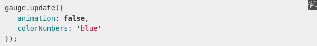

<script>
var radial = new RadialGauge({
--------data-width="160"
--------data-height="600"
--------ata-border-radius="20"
------------------------------
------------------------------
------------------------------
});
radial.draw();
<script>
There are two ways Re-Configurering gauges at runtime
Updating via API is quite simple. it expects a configuration object which contains options to change in the current gauge configuration:
All the remaining options defined for this gauge configuration will remain untouched, so there is no need to upset all possible config options within the call.
The first option is reccomended! so no need for last one!